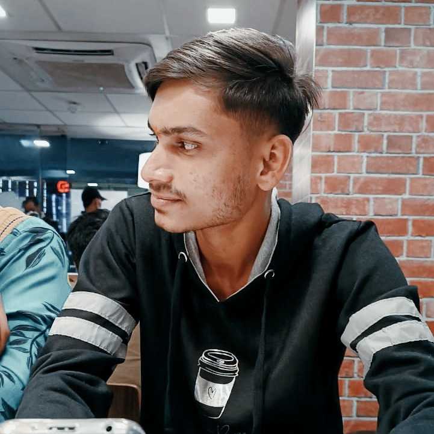

About Me
Tanishk Lalge
Hello! My name is Tanishk Lalge, a passionate and driven student pursuing Masters in Computer Application (MCA) at the International Institute of Professional Studies (IIPS), DAVV, Indore. My journey in the world of technology and data began with a keen interest in problem-solving and a fascination with how data can be used to uncover insights and drive decisions. I am deeply interested in data analytics, web development, and machine learning. My goal is to become a proficient Data Analyst, leveraging technology to solve real-world problems and make informed decisions through data-driven insights.
Education
- Masters in Computer Application - IIPS (DAVV), Indore
Data Science Video
- Youtube Data Science Playlist click here
Certificates
Contact Me
Email: lalgetanishk@gmail.com
LinkedIn: View LinkedIn
Download CV: Click Here